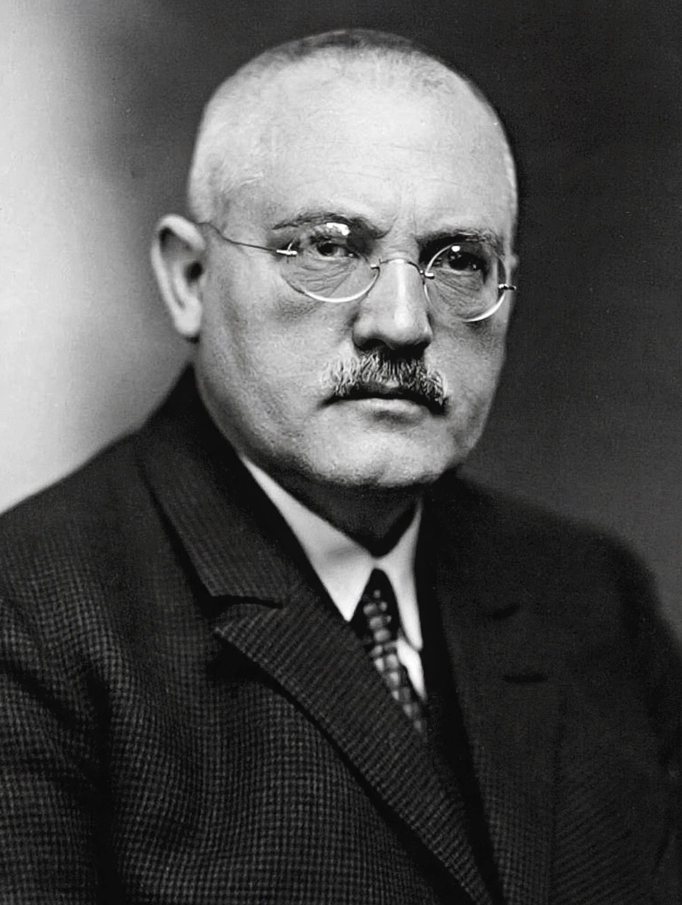

Carl Bosch

Carl Bosch
| Born | 27 August 1874, Cologne, German Empire |
|---|---|
| Died | 26 April 1940 (aged 65), Heidelberg, Germany |
| Nationality | German |
| Known for | Haber–Bosch process, high-pressure chemistry |
| Awards | Nobel Prize in Chemistry (1931) |
| Fields | Chemistry, engineering |
Carl Bosch (German: [bɔʃ]; 27 August 1874 – 26 April 1940) was a German chemist and engineer and the recipient of the 1931 Nobel Prize in Chemistry, shared with Friedrich Bergius, "in recognition of their contributions to the invention and development of chemical high pressure methods". Bosch is best known for industrialising Fritz Haber's laboratory process for ammonia synthesis into the large-scale Haber–Bosch process, one of the foundational technologies of modern fertiliser production.
Early life and career
Bosch was born in Cologne, the son of a gas and waterworks engineer. He trained first in metallurgy and mechanical engineering at the Charlottenburg Polytechnic in Berlin before studying chemistry at the University of Leipzig, where he received his doctorate in 1898 in organic chemistry. In 1899 he joined BASF in Ludwigshafen, the company with which he would spend his entire career.
Ammonia synthesis at scale
When BASF acquired Haber's tabletop ammonia process in 1909, Bosch took charge of converting it into an industrial process. The problems were formidable: the reaction required pressures around 200 atmospheres and temperatures near 500 °C, and available steels failed under hydrogen attack. Bosch's team developed carbon-steel reactors lined with soft iron, large-scale compressors, and catalyst systems that could be manufactured cheaply, while Bosch himself devised methods for producing the necessary hydrogen and nitrogen gases on an industrial scale (including the Bosch process for hydrogen production from water gas). The first plant at Oppau began production in 1913, and a much larger works at Leuna followed in 1917.
IG Farben and later work
Bosch rose to become chairman of BASF and, after the 1925 merger that created the conglomerate IG Farben, its first chairman of the board (1926–1935). Under his leadership the company developed high-pressure methanol synthesis and the Bergius process for producing synthetic fuel from coal. A committed negotiator at the 1919 Paris Peace Conference, he also assembled one of the largest private collections of beetles and butterflies of his era and supported astronomy. Bosch's relationship with the Nazi regime was strained: although he reached an accommodation with it as an industrialist, he privately criticised its antisemitic policies and intervened in some individual cases, and he was progressively marginalised after 1935. He died in Heidelberg in 1940.
Legacy
The Haber–Bosch process Bosch engineered remains the basis of world ammonia production and of the nitrogen fertilisers that underpin modern agriculture. The lunar crater Bosch is named in his honour, as is the Carl Bosch Museum in Heidelberg.
See also: Fritz Haber · Haber process · BASF · IG Farben